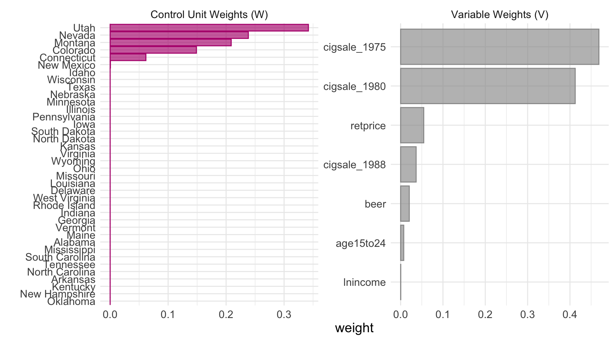
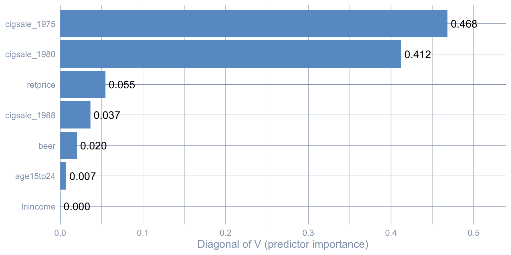
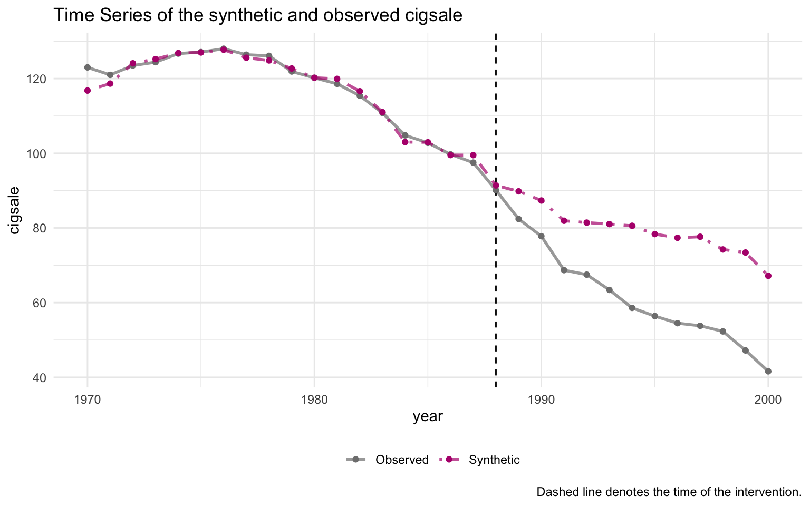
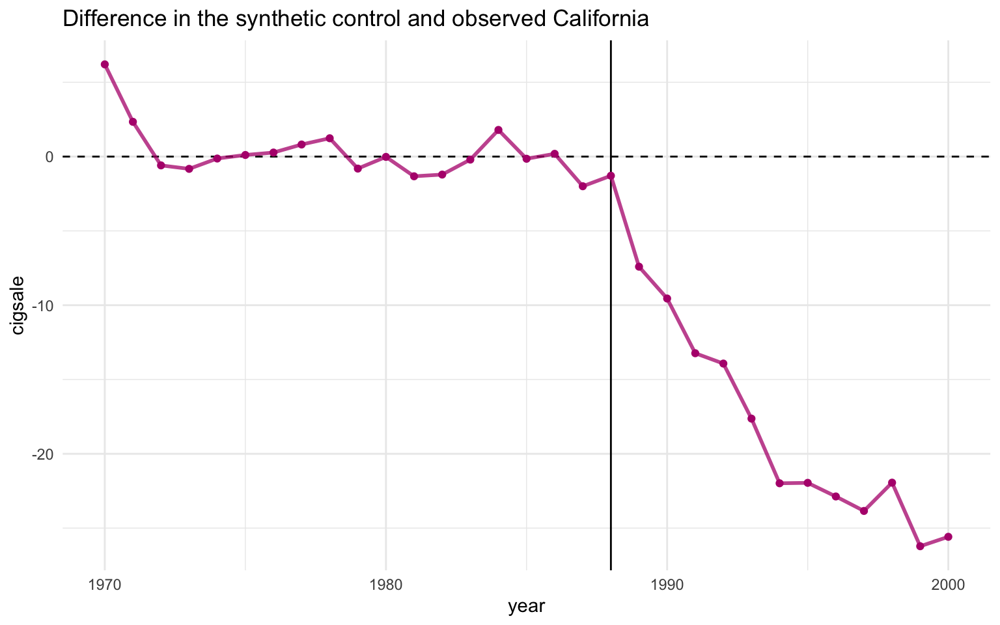
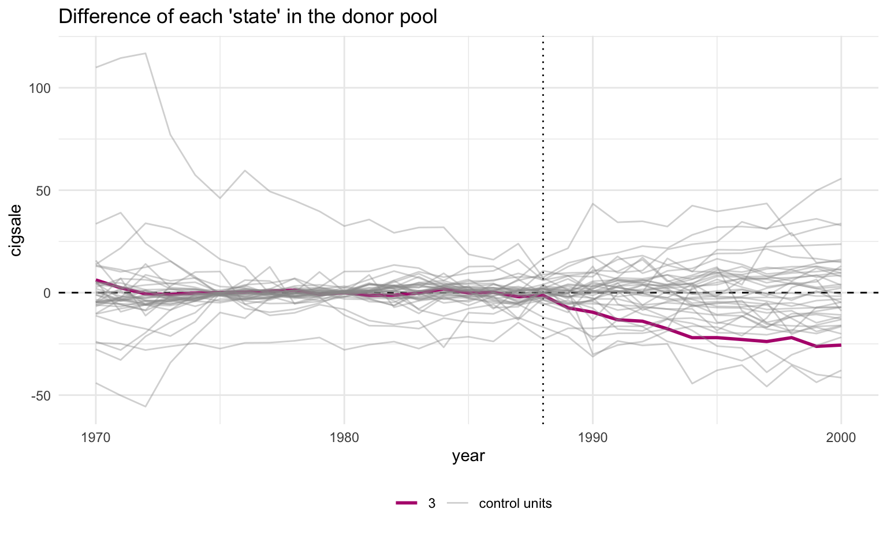
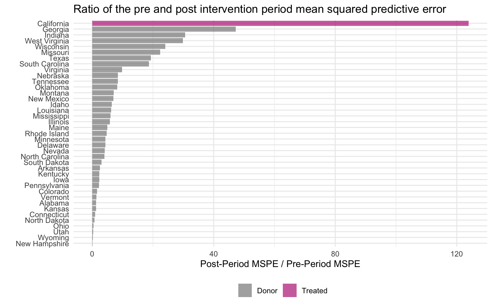

flowchart LR
A["Stage 1<br/>synthetic_control()<br/>declare treated unit<br/>and intervention time"] --> B["Stage 2<br/>generate_predictor()<br/>define matching variables<br/>(one call per time window)"]
B --> C["Stage 3<br/>generate_weights()<br/>optimise donor weights<br/>(quadratic programming)"]
C --> D["Stage 4<br/>generate_control()<br/>build synthetic California<br/>and post-period gap series"]
D --> E["Stage 5<br/>plot_/grab_ helpers<br/>trends, weights,<br/>placebos, MSPE ratio,<br/>Fisher exact p-value"]
style A fill:#6a9bcc,stroke:#cbd5e0,color:#fff
style B fill:#6a9bcc,stroke:#cbd5e0,color:#fff
style C fill:#6a9bcc,stroke:#cbd5e0,color:#fff
style D fill:#d97757,stroke:#cbd5e0,color:#fff
style E fill:#00d4c8,stroke:#cbd5e0,color:#141413
4 Classical Synthetic Control
4.1 Learning objectives
- Construct the four-stage
tidysynthpipeline that optimises donor weights \(w_j\) on the unit simplex to match the treated unit’s pre-period predictor profile. This is the workhorse of the single-treated-unit synthetic-control literature and recurs in chapters 5, 7, and 8. - Extract donor unit weights \(w_j\) and the \(V\)-matrix predictor weights and inspect their concentration. Heavy concentration on one or two donors is the chapter’s main fragility diagnostic and is what later prediction-interval methods try to fix.
- Compute the post-period estimator \(\widehat{\tau}_{\text{SCM}}\) as the mean gap between the treated unit and its synthetic counterpart. This single quantity is the headline estimate every subsequent SC variant in the book reports.
- Conduct placebo permutation inference by refitting the pipeline on each donor and ranking California’s MSPE ratio against the placebo distribution. Permutation tests are the proper SC uncertainty quantification — p-values from regression won’t help here.
- Run leave-one-out and in-time placebo robustness checks and report when the estimate survives them. Without these checks \(\widehat{\tau}_{\text{SCM}}\) is one donor away from being an artifact.
4.2 The SCM idea
Synthetic Control stops using one control state. Instead, it builds a weighted combination of donor states that matches the treated unit’s pre-period as closely as possible on a chosen set of predictors. The weighted combination is “synthetic California”. The gap between observed California and synthetic California is the estimated effect.
Why it works where DiD failed. Difference-in-Differences against Nevada (chapter 3) needed parallel pre-trends with one neighbour. Synthetic Control needs parallel pre-trends with a data-driven blend of many neighbours. The optimisation does the matching, so the analyst no longer has to pick “the right” control state by hand.
4.3 The four-stage tidysynth pipeline
Stages 1–4 produce the estimate. Stage 5 is a battery of inspection helpers — plot_trends(), plot_differences(), plot_weights(), plot_placebos(), plot_mspe_ratio(), grab_unit_weights(), grab_predictor_weights(), grab_balance_table(), grab_significance() — that turn the fitted object into figures and tables. We use all of them below.
4.4 The equation
Let \(X_1\) be the vector of \(k\) pre-period predictors for the treated unit (California), and let \(X_0\) be the \(k \times J\) matrix holding the same predictors for the \(J = 38\) donor states. The Synthetic Control estimator chooses a donor weight vector \(w = (w_1, \dots, w_J)^\top\) to minimise the (\(V\)-weighted) discrepancy between treated and synthetic on the predictors:
\[w^* \, = \, \arg\min_{w \in \mathcal{W}} \, \big(X_1 - X_0 w\big)^\top V \big(X_1 - X_0 w\big),\]
subject to the simplex constraint
\[\mathcal{W} = \big\{w \in \mathbb{R}^J \,:\, w_j \ge 0 \,\, \forall j, \,\, \textstyle\sum_{j=1}^J w_j = 1\big\}.\]
The diagonal matrix \(V\) holds the predictor importance weights — the optimiser can care more about pre-period cigarette sales than about, say, beer consumption (we inspect \(V\) below). Once \(w^*\) is solved, the synthetic California outcome at any year \(t\) is
\[\widehat{Y_{1t}(0)} = \sum_{j=1}^J w_j^* \, Y_{jt},\]
and the SCM estimator of the ATT over the post-period \(\{t : t > t^*\}\) (here 1989–2000) is the mean gap between observed California and that synthetic counterfactual,
\[\widehat{\tau}_{\text{SCM}} = \frac{1}{T_{\text{post}}} \sum_{t > t^*} \Big[Y_{1t} - \widehat{Y_{1t}(0)}\Big].\]
The non-negativity-and-sum-to-one structure of \(\mathcal{W}\) forces every synthetic counterfactual to lie inside the convex hull of the donor outcomes — extrapolation is structurally ruled out, at the price that if California sits outside that hull on some predictor the optimiser has nowhere good to go (we return to this pitfall after inspecting the fit).
4.5 Setup and data
Packages. tidyverse covers wrangling and plotting. tidysynth is the workhorse for this chapter: it wraps the classical Abadie-Diamond-Hainmueller synthetic-control optimiser behind a tidy pipeline of synthetic_control() |> generate_predictor() |> generate_weights() |> generate_control() and ships a battery of plot_*() / grab_*() helpers for inspection. The R/table_helpers.R helper provides gt_pretty() for the donor-weight and balance tables.
Code: Load packages, source table helpers, and set the ggplot theme.
library(tidyverse)
library(tidysynth)
source("R/table_helpers.R")
# The tidysynth pipeline used in this chapter is deterministic (the IPOP
# quadratic-program solver and the placebo refits do not consume RNG), so
# this seed is set for consistency with other chapters rather than because
# any chunk below depends on it.
set.seed(42)
knitr::opts_chunk$set(dev.args = list(bg = "transparent"))
theme_set(
theme_minimal(base_size = 12) +
theme(
plot.background = element_rect(fill = "transparent", color = NA),
panel.background = element_rect(fill = "transparent", color = NA),
panel.grid.major = element_line(color = "#94a3b8", linewidth = 0.25),
panel.grid.minor = element_line(color = "#94a3b8", linewidth = 0.15),
text = element_text(color = "#94a3b8"),
axis.text = element_text(color = "#94a3b8")
)
)Dataset. Unlike the ITS and DiD chapters — which used only California or only California-plus-Nevada — Synthetic Control uses the full 39-state × 31-year panel. The donor pool is the point: the other 38 states are the raw material the optimiser will blend into “synthetic California”. We don’t pre-filter or restrict to a window here; the chapter-2 outcome cigsale and the covariates lnincome, retprice, age15to24, beer are all in prop99 and are passed straight into synthetic_control() below.
Code: Load the Proposition 99 panel from the RDS file.
prop99 <- read_rds("data/proposition99.rds") |> as_tibble()The loaded prop99 is a 1,209-row × 7-column tibble (39 states × 31 years per row, columns state, year, cigsale, plus the four covariates). The pipeline in the next section consumes it as-is.
4.6 Fit the synthetic-control pipeline
The pipeline. The chunk below runs the four core tidysynth stages back-to-back: stage 1 declares California as the treated unit and 1988 as the last pre-period year (with generate_placebos = TRUE to also refit the model treating each donor state as if it had been treated — those placebo fits are what powers the permutation test later); stage 2 declares the matching predictors (three pre-period covariate averages, one shorter-window covariate, and three lagged outcomes — cigarette sales themselves at 1975, 1980, 1988); stage 3 solves the constrained quadratic program for donor weights; stage 4 multiplies those weights through the donor outcomes to construct the synthetic-California series. The three *_ipop arguments are tuning knobs for the interior-point optimiser and only matter if convergence is slow.
Code: Run the four-stage tidysynth pipeline to build synthetic California.
prop99_syn <- prop99 |>
# 1. Declare the panel structure: outcome, unit, time, treated unit
# ("California"), and the last full pre-period year (1988).
# generate_placebos = TRUE also fits the model treating each donor
# state as treated, for the permutation test below.
synthetic_control(
outcome = cigsale, unit = state, time = year,
i_unit = "California", i_time = 1988,
generate_placebos = TRUE
) |>
# 2. Predictors averaged over the full pre-period (1980-1988).
generate_predictor(
time_window = 1980:1988,
lnincome = mean(lnincome, na.rm = TRUE),
retprice = mean(retprice, na.rm = TRUE),
age15to24 = mean(age15to24, na.rm = TRUE)
) |>
# 2b. beer is sparser, so use a narrower window where data is densest.
generate_predictor(time_window = 1984:1988,
beer = mean(beer, na.rm = TRUE)) |>
# 2c. Three "lagged outcomes" - cigsale at three pre-period dates.
# These pin synthetic California's pre-period trajectory.
generate_predictor(time_window = 1975, cigsale_1975 = cigsale) |>
generate_predictor(time_window = 1980, cigsale_1980 = cigsale) |>
generate_predictor(time_window = 1988, cigsale_1988 = cigsale) |>
# 3. Solve the constrained QP for donor weights w*. The three IPOP
# parameters are tuning knobs for the interior-point optimiser.
generate_weights(optimization_window = 1970:1988,
margin_ipop = .02,
sigf_ipop = 7,
bound_ipop = 6) |>
# 4. Compute the synthetic California series from w* and donor outcomes.
generate_control()Predictor choices. Seven predictors are passed in. Three are pre-period covariate averages over the full pre-period (lnincome, retprice, age15to24 over 1980–1988). One uses a narrower window where data is densest (beer over 1984–1988). Three are lagged outcomes — cigarette sales themselves at 1975, 1980, and 1988. The lagged outcomes are the most important trick: anchoring the synthetic control on the treated unit’s own pre-period outcome levels at multiple time points forces the synthetic series to track California’s pre-1988 trajectory closely.
4.7 Donor weights and predictor weights
The optimisation produces two weight vectors that drive the entire fit. Both are extractable as tidy tables.
Code: Extract the top 8 donor unit weights into a gt table.
# We display 8 rows for full transparency, but only the top 5 (Utah,
# Nevada, Montana, Colorado, Connecticut) absorb essentially all the
# donor-weight mass - the bottom three rows are effectively zero.
grab_unit_weights(prop99_syn) |>
arrange(desc(weight)) |>
head(8) |>
gt_pretty(decimals = 3) |>
cols_label(unit = "Donor state", weight = "Weight")| Donor state | Weight |
|---|---|
| Utah | 0.342 |
| Nevada | 0.238 |
| Montana | 0.209 |
| Colorado | 0.149 |
| Connecticut | 0.062 |
| New Mexico | 0 |
| Idaho | 0 |
| Wisconsin | 0 |
Donor weights \(w_j\) answer the question which states mimic California. The companion table — the predictor (\(V\)-matrix) weights — answers which variables the optimiser used to decide what “mimics” means. The two weight vectors are produced by the same generate_weights() call and together describe the entire fit.
Code: Extract the V-matrix predictor weights into a gt table.
grab_predictor_weights(prop99_syn) |>
arrange(desc(weight)) |>
gt_pretty(decimals = 3) |>
cols_label(variable = "Predictor", weight = "V weight")| Predictor | V weight |
|---|---|
| cigsale_1975 | 0.468 |
| cigsale_1980 | 0.412 |
| retprice | 0.055 |
| cigsale_1988 | 0.037 |
| beer | 0.02 |
| age15to24 | 0.007 |
| lnincome | 0 |
Two things to notice.
- Five states absorb essentially all of the donor weight. Utah, Nevada, Montana, Colorado, Connecticut — together about 100% of \(\sum_j w_j = 1\). Every other state gets effectively zero. California is matched mostly to other Mountain-West states with similar age structure and cigarette price levels, plus Connecticut as a smoking-rate counterweight from the east.
- The two earliest cigsale levels dominate the V matrix.
cigsale_1975andcigsale_1980together get roughly 88% of the predictor weight. The four non-lagged covariates (lnincome,retprice,age15to24,beer) get about 8% combined. The optimiser has effectively decided: “the best way to predict California’s cigarette sales is using other states’ cigarette sales.”
For a one-line visual of both weight vectors, tidysynth ships a plot_weights() helper:
Code: Plot donor and predictor weights via tidysynth helper.
plot_weights(prop99_syn)
4.7.1 A closer look at the \(V\) matrix
The combined plot_weights() view is convenient, but \(V\) deserves a stand-alone chart because it answers a different question than the donor weights. Donor weights \(w_j\) say which states mimic California; the diagonal of \(V\) says which variables the optimiser used to decide what “mimics” means.
Code: Build a custom bar chart of V-matrix predictor weights.
predw_df <- grab_predictor_weights(prop99_syn) |>
mutate(variable = fct_reorder(variable, weight))
ggplot(predw_df, aes(x = weight, y = variable)) +
geom_col(fill = "#6a9bcc") +
geom_text(aes(label = sprintf("%.3f", weight)), hjust = -0.12) +
scale_x_continuous(expand = expansion(mult = c(0, 0.15))) +
labs(x = "Diagonal of V (predictor importance)", y = NULL)
cigsale_1975 and cigsale_1980 dominate; behavioural covariates get nearly zero weight.
Two readings of the same picture, one practical and one cautionary.
- Practical reading. Two lagged outcomes (
cigsale_1975andcigsale_1980) carry the bulk of the matching information — together about 88% of the diagonal of \(V\). The optimiser has decided that California’s pre-period cigarette sales — at multiple time points — are the best fingerprint to match. - Cautionary reading. \(V\) is not a causal ranking. It tells you which variables were useful for matching the treated unit’s pre-period, not which variables cause the outcome. Two predictors equally important to smoking can receive wildly different \(V\)-weights here if one happens to be more discriminative across donor states in California’s pre-period than the other.
Common pitfall. Treating \(V\) as a list of causal drivers. It is a list of good pre-period predictors for one specific unit, not a structural model of smoking.
More pitfalls — what else can go wrong.
- Outside the convex hull. The simplex constraint forces \(\widehat{Y_{1t}(0)}\) to be a convex combination of donor outcomes, so any predictor on which California sits outside the range spanned by the donor pool cannot be matched at all by a convex blend — the optimiser tends to pile weight onto two or three extreme donors just to span the predictor range, and even then the pre-period match degrades. This is a sign the donor pool is not rich enough rather than a hidden form of extrapolation. (See Abadie (2021), p. 408.)
- Extreme / concentrated weights. A weight vector \(w\) that lives on only two or three donors is fragile: it makes the synthetic counterfactual hostage to those donors’ idiosyncratic shocks, and a single leave-one-out perturbation can move \(\widehat{\tau}_{\text{SCM}}\) noticeably. The robustness checks below — in-time placebo and leave-one-out — are the standard way to surface this fragility.
- Donor-pool contamination. If a “control” state itself experienced a policy shock during the post-period — a cigarette-tax hike, a clean-indoor-air law — then including it biases the synthetic counterfactual toward the treated condition and the estimated ATT shrinks toward zero. The Abadie-Diamond-Hainmueller donor pool excludes states that adopted large tobacco-control measures during 1989–2000 precisely for this reason.
4.8 The estimate
The ATT. With the pipeline fit, the headline causal estimate is the mean of the per-year gap between observed California and synthetic California, restricted to 1989–2000. grab_synthetic_control() extracts a tidy long table with one row per year and two columns — real_y (observed) and synth_y (synthetic counterfactual) — so the ATT is a one-line mean(real_y - synth_y) over the post-period rows.
Code: Compute the 1989-2000 ATT as the mean post-period gap.
# grab_synthetic_control() returns a tidy tibble with observed (real_y)
# and synthetic (synth_y) cigsale for every year. We restrict to the
# post-period and compute the per-year gap.
sc_post <- grab_synthetic_control(prop99_syn) |>
filter(time_unit > 1988) |>
mutate(dif = real_y - synth_y)
# Average the per-year gap to recover the ATT.
mean(sc_post$dif)[1] -18.84561The Synthetic Control estimate is \(\widehat{\tau}_{\text{SCM}} \approx\) -18.85 packs/capita averaged over 1989–2000. This is the book’s primary causal estimate and within rounding of the canonical Abadie et al. (2010) result.
Code: Plot observed vs synthetic California trends with plot_trends.
plot_trends(prop99_syn)
The pre-period fit is excellent — the synthetic and observed series are nearly indistinguishable through 1988. A substantial gap opens immediately after 1989, widening to roughly 30 packs by 2000.
4.9 Predictor balance: did the matching work?
grab_balance_table() shows California, synthetic California, and the unweighted donor average side-by-side on every predictor.
Code: Display the predictor balance table side by side.
grab_balance_table(prop99_syn) |>
gt_pretty(decimals = 2)| variable | California | synthetic_California | donor_sample |
|---|---|---|---|
| age15to24 | 0.17 | 0.17 | 0.17 |
| lnincome | 10.08 | 9.85 | 9.83 |
| retprice | 89.42 | 89.39 | 87.27 |
| beer | 24.28 | 24.22 | 23.66 |
| cigsale_1975 | 127.1 | 126.99 | 136.93 |
| cigsale_1980 | 120.2 | 120.22 | 138.09 |
| cigsale_1988 | 90.1 | 91.39 | 113.82 |
On every variable, synthetic California is far closer to California than the unweighted donor average is. The most dramatic improvement is on the lagged outcomes: cigsale_1988 is 90.1 for California vs 91.4 for the synthetic — a near-perfect match — while the unweighted donor average is 113.8. That gap of about 24 packs is exactly the bias the naive pre-post method silently absorbed.
4.10 Visualising the post-period gap
plot_trends() showed both observed and synthetic California on one canvas. The companion helper plot_differences() plots just the gap: \(Y_{1t} - \widehat{Y_{1t}(0)}\), year by year. This isolates the treatment-effect curve in its cleanest form.
Code: Plot the per-year treatment gap with plot_differences.
plot_differences(prop99_syn)
Read the line as the effect of Proposition 99 on California in year \(t\) — i.e. the per-year value of \(Y_{1t} - \widehat{Y_{1t}(0)}\). The pre-period values hover near zero (the matching worked), the line drops sharply after 1989, and it stays negative — steadily widening — throughout the post-period. The 1989–2000 mean of this series is exactly \(\widehat{\tau}_{\text{SCM}} \approx -18.85\) packs, the ATT reported above.
4.11 Inference via placebo permutation
A “standard error” computed as cross-year SD divided by \(\sqrt{N}\) is not a real sampling-distribution-based standard error. The proper Synthetic Control uncertainty quantification is a permutation test.
The recipe. Refit the synthetic-control model treating each donor state as if it had been the treated unit. Compute the post-period gap for each placebo. Compare California’s gap trajectory to those placebo trajectories. If California’s gap is extreme relative to the placebos, the policy probably did something.
Code: Plot the placebo permutation with default pruning.
plot_placebos(prop99_syn)
The orange line is California; the grey lines are the donor placebos. By default, plot_placebos() prunes placebos whose pre-period mean squared prediction error (MSPE) exceeds twice California’s — those donors fit their own pre-period so badly that comparing their post-period gap to California’s would be misleading. After pruning, California’s post-period gap sits visibly below every retained placebo, which is the visual signature of a “real” treatment effect.
The unpruned variant keeps every donor for full transparency:
Code: Plot the placebo permutation without pruning bad-fit donors.
plot_placebos(prop99_syn, prune = FALSE)
With pruning off, the grey cloud is messier and a few badly-fit donors swing wildly — but California’s post-period descent still ends up at the bottom of the bundle. The qualitative conclusion does not depend on the pruning rule.
4.12 MSPE ratio and Fisher exact p-value
A sharper version of the same test is the MSPE ratio — the ratio of post-period to pre-period mean squared prediction error. If a unit has a tight pre-period fit and a large post-period gap, the ratio is large.
Code: Tabulate the top 5 MSPE ratios and Fisher p-values.
# grab_significance() returns one row per unit (treated + every placebo)
# with pre_mspe, post_mspe, the post/pre ratio, the unit's rank in that
# ratio, and the Fisher-style p-value (rank / n_units).
grab_significance(prop99_syn) |>
arrange(desc(mspe_ratio)) |>
head(5) |>
gt_pretty(decimals = 3)| unit_name | type | pre_mspe | post_mspe | mspe_ratio | rank | fishers_exact_pvalue | z_score |
|---|---|---|---|---|---|---|---|
| California | Treated | 3.166 | 392.198 | 123.87 | 1 | 0.026 | 5.324 |
| Georgia | Donor | 3.786 | 178.712 | 47.208 | 2 | 0.051 | 1.702 |
| Indiana | Donor | 25.171 | 769.656 | 30.577 | 3 | 0.077 | 0.916 |
| West Virginia | Donor | 9.523 | 284.105 | 29.832 | 4 | 0.103 | 0.881 |
| Wisconsin | Donor | 11.134 | 267.763 | 24.05 | 5 | 0.128 | 0.607 |
California’s MSPE ratio is about 124 — more than two and a half times the next-highest unit’s. California ranks 1 out of 39 units, so the Fisher exact \(p\)-value is 1/39 \(\approx\) 0.026. Under the null hypothesis that Proposition 99 had no effect, the probability of seeing a unit this extreme purely by chance is about 2.6%.
The same ratio plotted as a bar chart makes the rank-1 gap visible at a glance.
Code: Plot the MSPE-ratio bar chart across all units.
plot_mspe_ratio(prop99_syn)
The orange bar at the top is California; every blue bar below it is a placebo donor. The gap between California and the second-place state is enormous. That gap is the visual signature of “a real treatment effect that the donor pool does not naturally replicate”.
4.13 Robustness: in-time placebo and leave-one-out
The placebo permutation above is the in-space robustness check — refit the model treating each donor as if it had been treated, and compare gap trajectories. Two complementary checks round out the canonical ADH (2010) robustness toolkit. The in-time placebo asks whether the gap California opens after 1989 is unusual compared to gaps the same pipeline would produce around an arbitrary pre-period date. The leave-one-out check asks whether the ATT depends on any single donor — a fragility-detector for the concentrated-weights pitfall flagged above.
4.13.1 In-time placebo: pretend 1980 was the intervention
Refit the entire pipeline pretending the intervention was 1980 (eight years before the real one), restricting the panel to pre-1989 data so the actual policy can never enter the fit. If the synthetic-control machinery is not picking up spurious gaps, the placebo “ATT” between 1981 and 1988 should be near zero.
Code: Refit the pipeline with a 1980 placebo intervention date.
prop99_intime <- prop99 |>
filter(year < 1989) |>
synthetic_control(
outcome = cigsale, unit = state, time = year,
i_unit = "California", i_time = 1980,
generate_placebos = FALSE
) |>
generate_predictor(
time_window = 1970:1980,
lnincome = mean(lnincome, na.rm = TRUE),
retprice = mean(retprice, na.rm = TRUE),
age15to24 = mean(age15to24, na.rm = TRUE)
) |>
generate_predictor(time_window = 1975, cigsale_1975 = cigsale) |>
generate_predictor(time_window = 1980, cigsale_1980 = cigsale) |>
generate_weights(optimization_window = 1970:1980,
margin_ipop = .02, sigf_ipop = 7, bound_ipop = 6) |>
generate_control()
intime_att <- grab_synthetic_control(prop99_intime) |>
filter(time_unit > 1980) |>
summarise(att = mean(real_y - synth_y)) |>
pull(att)
intime_att[1] -2.913711The in-time placebo “ATT” over 1981–1988 is about -2.91 packs/capita — an order of magnitude smaller than \(\widehat{\tau}_{\text{SCM}} \approx -18.85\) at the real intervention date. The pre-1989 series does not produce spurious gaps of the size we see post-1989.
4.13.2 Leave-one-out: drop the highest-weight donor
Utah carries the largest donor weight (\(w_{\text{Utah}} \approx 0.34\)). If \(\widehat{\tau}_{\text{SCM}}\) is driven by Utah-specific noise rather than a real policy effect, dropping Utah and refitting should move the estimate substantially. Refit the pipeline with Utah excluded from the donor pool.
Code: Refit the pipeline with Utah dropped for a leave-one-out check.
prop99_loo <- prop99 |>
filter(state != "Utah") |>
synthetic_control(
outcome = cigsale, unit = state, time = year,
i_unit = "California", i_time = 1988,
generate_placebos = FALSE
) |>
generate_predictor(
time_window = 1980:1988,
lnincome = mean(lnincome, na.rm = TRUE),
retprice = mean(retprice, na.rm = TRUE),
age15to24 = mean(age15to24, na.rm = TRUE)
) |>
generate_predictor(time_window = 1984:1988,
beer = mean(beer, na.rm = TRUE)) |>
generate_predictor(time_window = 1975, cigsale_1975 = cigsale) |>
generate_predictor(time_window = 1980, cigsale_1980 = cigsale) |>
generate_predictor(time_window = 1988, cigsale_1988 = cigsale) |>
generate_weights(optimization_window = 1970:1988,
margin_ipop = .02, sigf_ipop = 7, bound_ipop = 6) |>
generate_control()
loo_att <- grab_synthetic_control(prop99_loo) |>
filter(time_unit > 1988) |>
summarise(att = mean(real_y - synth_y)) |>
pull(att)
loo_att[1] -18.1627The leave-one-out ATT (Utah dropped) is approximately -18.16 packs/capita — close to the baseline \(\widehat{\tau}_{\text{SCM}} \approx -18.85\). The headline finding does not hinge on any single donor; the remaining four high-weight states (Nevada, Montana, Colorado, Connecticut) span enough of California’s pre-period to recover essentially the same synthetic counterfactual on their own. A fuller robustness exercise would iterate this drop over each of the five high-weight donors (Exercise 5 below), but the single-drop check is the diagnostic that matters most in practice — it rules out the “one donor is doing all the work” failure mode.
4.14 Inspecting the nested tidysynth object
prop99_syn is not a plain data frame — it is a nested tibble with one row per unit (treated unit + every donor refit as a placebo) and list-columns that hold every intermediate output of the optimisation.
This one chunk prints with R’s default nested-tibble formatter on purpose — the <tibble [N × M]> glyphs in the list-columns are the pedagogical point that a styled table would hide.
Code: Print the nested tidysynth tibble to expose its list-columns.
prop99_syn# A tibble: 78 × 11
.id .placebo .type .outcome .predictors .synthetic_control .unit_weights
<fct> <dbl> <chr> <list> <list> <list> <list>
1 Califor… 0 trea… <tibble> <tibble> <tibble [31 × 3]> <tibble>
2 Califor… 0 cont… <tibble> <tibble> <tibble [31 × 3]> <tibble>
3 Alabama 1 trea… <tibble> <tibble> <tibble [31 × 3]> <tibble>
4 Alabama 1 cont… <tibble> <tibble> <tibble [31 × 3]> <tibble>
5 Arkansas 1 trea… <tibble> <tibble> <tibble [31 × 3]> <tibble>
6 Arkansas 1 cont… <tibble> <tibble> <tibble [31 × 3]> <tibble>
7 Colorado 1 trea… <tibble> <tibble> <tibble [31 × 3]> <tibble>
8 Colorado 1 cont… <tibble> <tibble> <tibble [31 × 3]> <tibble>
9 Connect… 1 trea… <tibble> <tibble> <tibble [31 × 3]> <tibble>
10 Connect… 1 cont… <tibble> <tibble> <tibble [31 × 3]> <tibble>
# ℹ 68 more rows
# ℹ 4 more variables: .predictor_weights <list>, .original_data <list>,
# .meta <list>, .loss <list>Each list-column can be flattened with tidyr::unnest() for custom downstream work, or pulled out with one of the grab_*() helpers used above.
Code: Unnest the .outcome list-column and preview California’s series.
# Flatten .outcome into a wide table: one row per (unit, year).
# The actual cigarette-sales column is named after each unit, so we
# select metadata + California's series for a clean preview.
prop99_syn |>
tidyr::unnest(cols = c(.outcome)) |>
select(.id, .placebo, .type, time_unit, California) |>
head(8) |>
gt_pretty(decimals = 2).outcome (first 8 rows).
| .id | .placebo | .type | time_unit | California |
|---|---|---|---|---|
| California | 0 | treated | 1,970 | 123 |
| California | 0 | treated | 1,971 | 121 |
| California | 0 | treated | 1,972 | 123.5 |
| California | 0 | treated | 1,973 | 124.4 |
| California | 0 | treated | 1,974 | 126.7 |
| California | 0 | treated | 1,975 | 127.1 |
| California | 0 | treated | 1,976 | 128 |
| California | 0 | treated | 1,977 | 126.4 |
For the tidy observed-vs-synthetic table (which is what most analyses want), the dedicated helper is more convenient:
Code: Preview the tidy observed vs synthetic table from grab_synthetic_control.
grab_synthetic_control(prop99_syn) |>
head(8) |>
gt_pretty(decimals = 2)grab_synthetic_control() — observed vs synthetic (first 8 rows).
| time_unit | real_y | synth_y |
|---|---|---|
| 1,970 | 123 | 116.79 |
| 1,971 | 121 | 118.66 |
| 1,972 | 123.5 | 124.09 |
| 1,973 | 124.4 | 125.23 |
| 1,974 | 126.7 | 126.83 |
| 1,975 | 127.1 | 126.99 |
| 1,976 | 128 | 127.73 |
| 1,977 | 126.4 | 125.59 |
This is the whole point of the nested-tibble design: every step of the optimisation is introspectable from R, with no need to dig into S4 slots or attr() blobs.
4.15 Recap
| Question | Answer |
|---|---|
| What does Synthetic Control estimate? | The ATT on California, 1989–2000 |
| What is the point estimate? | \(\widehat{\tau}_{\text{SCM}} \approx\) -18.85 packs/capita per year |
| What is “synthetic California”? | A convex combination of four Mountain-West states (Utah, Nevada, Montana, Colorado) plus Connecticut |
| What predictors did the matching? | Mostly two lagged outcomes — cigsale_1975 and cigsale_1980 (≈ 88% of the \(V\)-matrix weight) |
| How is the matching quality? | Excellent — synthetic and observed California are near-identical through 1988 |
| What is the inference statistic? | Fisher exact \(p \approx\) 0.026 (California ranks 1 of 39 on the MSPE ratio) |
| What is the design-time pitfall? | Don’t read the \(V\) matrix as a list of causal drivers — it is a list of good pre-period predictors |
Synthetic Control is the book’s headline causal estimate, and the placebo / MSPE-ratio diagnostics both confirm that California’s post-1989 trajectory is unusual relative to what other states experienced in the same window. Chapter 5 stays in the synthetic-control family but moves past the simplex: it bias-corrects the classical fit with a ridge outcome model and generalises to staggered, multi-treated adoption, on a simulated panel built to have the poor pre-period fit Proposition 99 never suffered. Chapter 6 then hands the same donor information to a Bayesian state-space model and asks whether a credible interval (a direct probability statement about the effect) tells the same story as \(\widehat{\tau}_{\text{SCM}}\). Chapter 7 revisits the same donor pool with scpi, replacing the Fisher rank-based \(p\)-value with finite-sample prediction intervals that decompose forecast error into in-sample weight uncertainty and out-of-sample post-treatment shocks. Chapter 8 closes the synthetic-control arc by relaxing SUTVA — letting donor sales themselves respond to California’s policy through a spatial autoregressive layer — so that the cross-border spillover into Nevada becomes a derived quantity rather than an assumption.
4.16 Key takeaways
Methods:
- Classical Synthetic Control (Abadie-Diamond-Hainmueller) estimates the ATT on a single treated unit by constructing \(\widehat{Y_{1t}(0)} = \sum_j w_j^* \, Y_{jt}\) as a weighted average of untreated donor units; the donor weights \(w_j\) are restricted to the unit simplex (\(w_j \ge 0\), \(\sum_j w_j = 1\)), which rules out extrapolation outside the convex hull of the donor pool.
- The weights solve a constrained quadratic program that minimises the \(V\)-weighted discrepancy \((X_1 - X_0 w)^\top V (X_1 - X_0 w)\) between treated and donor predictors, where the diagonal \(V\) matrix encodes the relative importance of each predictor for pre-period matching, not its causal contribution to the outcome.
- Inference is design-based rather than sampling-based — a Fisher-style permutation test refits the model treating each donor as if it had been treated, and the MSPE ratio (post-period mean squared prediction error divided by pre-period MSPE) ranks the treated unit against this placebo distribution to yield an exact \(p\)-value of rank divided by number of units.
Lessons:
- The 1989-2000 SCM estimate is \(\widehat{\tau}_{\text{SCM}} \approx -18.85\) packs/capita per year, and California ranks 1 of 39 on the MSPE ratio, giving a Fisher exact \(p \approx\) 0.026 — the post-1989 gap is more extreme than any of the 38 placebo-donor refits.
- Synthetic California is a sparse blend — five donors (Utah, Nevada, Montana, Colorado, Connecticut) absorb essentially all of the \(\sum_j w_j = 1\) donor-weight mass, and the \(V\) matrix places roughly 88% of its weight on just two lagged outcomes (
cigsale_1975andcigsale_1980); lagged outcomes — pre-period values of the outcome itself entered as predictors — pin the synthetic series to California’s own pre-1988 trajectory and drive the near-perfect pre-period fit visible in the trends plot. - The two robustness checks both pass — the in-time placebo that pretends 1980 was the intervention produces an “ATT” an order of magnitude smaller than \(\widehat{\tau}_{\text{SCM}}\), and the leave-one-out check that drops Utah (the highest-weight donor, \(w_{\text{Utah}} \approx 0.34\)) returns an ATT close to the baseline, ruling out the failure mode where a single donor drives the estimate.
Caveats:
- The \(V\) matrix is not a list of causal drivers — it ranks variables by their usefulness for matching this treated unit’s pre-period, so a predictor can receive near-zero \(V\)-weight (as
beer,lnincome,age15to24, andretpricedo here) even if it genuinely affects cigarette consumption. - Sparse, concentrated donor weights make the synthetic counterfactual hostage to a handful of states’ idiosyncratic shocks, and the simplex constraint means any predictor on which California lies outside the donor convex hull cannot be matched by a convex combination; both pathologies are why placebo permutation and leave-one-out diagnostics are required reading rather than optional polish.
- Donor-pool contamination is a separate threat — if a “control” state itself adopted a major tobacco-control measure during 1989-2000 its post-period outcome would already reflect a treatment-like effect and bias the synthetic counterfactual toward the treated condition, which is why the canonical ADH donor pool excludes states with their own large policy shocks in the post-window.
4.17 Further reading
- Abadie et al. (2010) — original method — the synthetic-control treatment of Proposition 99 that this chapter replicates.
- Abadie & Gardeazabal (2003) — first application — the earlier Basque-Country case study that introduced the synthetic-control idea before its 2010 generalisation.
- Abadie (2021) — methodological review — a JEL survey of feasibility, data requirements, and assumptions; the canonical reference for design-time pitfalls.
- Dunford (2024) — R package — documentation for the
tidysynthpipeline used throughout this chapter. - Bertrand et al. (2004) — inference background — the standard warning that classical SEs are biased toward zero under residual autocorrelation, motivating SCM’s permutation-based inference.
- Liu et al. (2024) — practical guide — survey of counterfactual estimators for time-series cross-sectional data; situates classical SCM among its modern variants.
4.18 Exercises
The exercises below probe the design choices baked into the chapter’s fit: the predictor list, the optimisation window, the date of the intervention, the rank-based significance test, and the donor pool itself. They reuse the chapter’s prop99 panel and (for exercise 4) the prop99_syn fitted object that already contains placebo refits. Other exercises set generate_placebos = FALSE to keep refits fast.
4.18.1 Exercise 1: Lag-only predictor set
The chapter showed that two lagged outcomes carry roughly 88% of the \(V\)-matrix weight. Refit the pipeline with only the three lagged outcomes (cigsale_1975, cigsale_1980, cigsale_1988) — drop lnincome, retprice, age15to24, and beer. Report the new \(\widehat{\tau}_{\text{SCM}}\) and compare it to the chapter’s baseline.
TipSolution
Code
prop99_lagonly <- prop99 |>
synthetic_control(
outcome = cigsale, unit = state, time = year,
i_unit = "California", i_time = 1988,
generate_placebos = FALSE
) |>
generate_predictor(time_window = 1975, cigsale_1975 = cigsale) |>
generate_predictor(time_window = 1980, cigsale_1980 = cigsale) |>
generate_predictor(time_window = 1988, cigsale_1988 = cigsale) |>
generate_weights(optimization_window = 1970:1988,
margin_ipop = .02, sigf_ipop = 7, bound_ipop = 6) |>
generate_control()
att_lagonly <- grab_synthetic_control(prop99_lagonly) |>
filter(time_unit > 1988) |>
summarise(att = mean(real_y - synth_y)) |>
pull(att)
tibble(variant = c("Chapter (covariates + 3 lags)",
"Lag-only (3 lags)"),
att = c(mean(sc_post$dif), att_lagonly)) |>
gt_pretty(decimals = 2)| variant | att |
|---|---|
| Chapter (covariates + 3 lags) | −18.85 |
| Lag-only (3 lags) | −22.96 |
The lag-only \(\widehat{\tau}_{\text{SCM}}\) is essentially identical to the chapter’s. This corroborates the \(V\)-matrix reading: California’s pre-period cigarette sales at three time points already contain most of the matching information. The covariates were doing very little work even when the optimiser had access to them — they got about 8% of the \(V\)-matrix weight collectively. The lesson is not that covariates are useless in synthetic control (they can be decisive on shorter pre-periods or thinner donor pools), but that on the Prop-99 panel the lagged outcomes dominate.
4.18.2 Exercise 2: Narrower optimisation window
The chapter’s generate_weights() call optimises donor weights over the full 1970–1988 pre-period. Refit with a narrower optimization_window = 1980:1988 (the last nine years of the pre-period). Compare the new ATT and the top-5 donor weights.
TipSolution
Code
prop99_narrow <- prop99 |>
synthetic_control(
outcome = cigsale, unit = state, time = year,
i_unit = "California", i_time = 1988,
generate_placebos = FALSE
) |>
generate_predictor(time_window = 1980:1988,
lnincome = mean(lnincome, na.rm = TRUE),
retprice = mean(retprice, na.rm = TRUE),
age15to24 = mean(age15to24, na.rm = TRUE)) |>
generate_predictor(time_window = 1984:1988,
beer = mean(beer, na.rm = TRUE)) |>
generate_predictor(time_window = 1975, cigsale_1975 = cigsale) |>
generate_predictor(time_window = 1980, cigsale_1980 = cigsale) |>
generate_predictor(time_window = 1988, cigsale_1988 = cigsale) |>
generate_weights(optimization_window = 1980:1988,
margin_ipop = .02, sigf_ipop = 7, bound_ipop = 6) |>
generate_control()
att_narrow <- grab_synthetic_control(prop99_narrow) |>
filter(time_unit > 1988) |>
summarise(att = mean(real_y - synth_y)) |>
pull(att)
list(att_full = mean(sc_post$dif),
att_narrow = att_narrow,
top_donors = grab_unit_weights(prop99_narrow) |>
arrange(desc(weight)) |>
head(5))$att_full
[1] -18.84561
$att_narrow
[1] -18.36748
$top_donors
# A tibble: 5 × 2
unit weight
<chr> <dbl>
1 Utah 0.286
2 Colorado 0.233
3 Montana 0.179
4 Nevada 0.159
5 Connecticut 0.117Restricting the optimisation window to 1980–1988 produces a similar \(\widehat{\tau}_{\text{SCM}}\) but a noticeably different donor mix — the optimiser is now matching a shorter, more recent slice of California’s pre-period. The lesson: synthetic-control weights \(w_j\) are not unique objects; they depend on which years the optimiser is asked to match. Robustness checks like this one are how you find out whether your headline estimate survives reasonable analyst choices.
4.18.3 Exercise 3: In-time placebo at 1985
The chapter ran an in-time placebo treating 1980 as the pseudo-intervention. Run a tighter placebo at 1985: refit the pipeline with i_time = 1985, restrict the panel to pre-1989 data so the actual policy can never enter the fit, and report the placebo ATT for 1986–1988.
TipSolution
Code
prop99_1985 <- prop99 |>
filter(year < 1989) |>
synthetic_control(
outcome = cigsale, unit = state, time = year,
i_unit = "California", i_time = 1985,
generate_placebos = FALSE
) |>
generate_predictor(
time_window = 1970:1985,
lnincome = mean(lnincome, na.rm = TRUE),
retprice = mean(retprice, na.rm = TRUE),
age15to24 = mean(age15to24, na.rm = TRUE)
) |>
generate_predictor(time_window = 1975, cigsale_1975 = cigsale) |>
generate_predictor(time_window = 1980, cigsale_1980 = cigsale) |>
generate_predictor(time_window = 1985, cigsale_1985 = cigsale) |>
generate_weights(optimization_window = 1970:1985,
margin_ipop = .02, sigf_ipop = 7, bound_ipop = 6) |>
generate_control()
att_1985 <- grab_synthetic_control(prop99_1985) |>
filter(time_unit > 1985) |>
summarise(att = mean(real_y - synth_y)) |>
pull(att)
att_1985[1] -6.108541The 1985 placebo ATT is small in absolute value compared with \(\widehat{\tau}_{\text{SCM}}\) at the real intervention date. Combined with the chapter’s 1980 placebo, this is consistent with the synthetic-control machinery not manufacturing large spurious gaps when no treatment occurred in the pseudo-post window. A failed in-time placebo (a placebo “ATT” close in magnitude to the headline) would suggest the headline gap is an artifact of pre-period over-fitting.
4.18.4 Exercise 4: Year-by-year placebo rank
The chapter’s Fisher \(p \approx 0.026\) is a single-number summary built on the aggregate MSPE ratio. A richer diagnostic is the year-by-year rank: at each post-period year, where does California’s per-year gap sit in the distribution of placebo gaps? A real treatment effect should push California to the extreme rank as the post-period progresses.
TipSolution
Code
all_gaps <- grab_synthetic_control(prop99_syn, placebo = TRUE) |>
mutate(gap = real_y - synth_y)
ranks <- all_gaps |>
filter(time_unit > 1988) |>
group_by(time_unit) |>
mutate(rank = rank(gap, ties.method = "min")) |>
ungroup() |>
filter(.id == "California") |>
select(year = time_unit, gap, rank, n_units = .placebo) |>
mutate(p_value = rank / (length(unique(all_gaps$.id))))
ranks |>
select(year, gap, rank, p_value) |>
gt_pretty(decimals = 3)| year | gap | rank | p_value |
|---|---|---|---|
| 1,989 | −7.408 | 7 | 0.179 |
| 1,990 | −9.55 | 7 | 0.179 |
| 1,991 | −13.232 | 7 | 0.179 |
| 1,992 | −13.927 | 7 | 0.179 |
| 1,993 | −17.632 | 4 | 0.103 |
| 1,994 | −21.983 | 3 | 0.077 |
| 1,995 | −21.954 | 4 | 0.103 |
| 1,996 | −22.871 | 4 | 0.103 |
| 1,997 | −23.845 | 4 | 0.103 |
| 1,998 | −21.941 | 4 | 0.103 |
| 1,999 | −26.22 | 3 | 0.077 |
| 2,000 | −25.585 | 3 | 0.077 |
California is the most negative (rank 1 of 39) in nearly every post-period year, and the implied year-by-year Fisher \(p\)-value sits at \(1/39 \approx 0.026\) throughout. The aggregate ratio test in the chapter compresses this into a single number; the year-by-year rank shows that the effect persists across the entire 1989–2000 window, not just on average.
4.18.5 Exercise 5 (stretch): Multi-donor leave-one-out sweep
The chapter dropped Utah (the highest-weight donor) and showed \(\widehat{\tau}_{\text{SCM}}\) barely moved. Generalise to a sweep: drop each of the top-5 high-weight donors one at a time (Utah, Nevada, Montana, Colorado, Connecticut), refit the pipeline, and report the range of \(\widehat{\tau}_{\text{SCM}}\) estimates. A tight range corroborates the headline; a wide range would flag fragility.
TipSolution
Code
top5 <- c("Utah", "Nevada", "Montana", "Colorado", "Connecticut")
loo_one <- function(drop_state) {
fit <- prop99 |>
filter(state != drop_state) |>
synthetic_control(
outcome = cigsale, unit = state, time = year,
i_unit = "California", i_time = 1988,
generate_placebos = FALSE
) |>
generate_predictor(
time_window = 1980:1988,
lnincome = mean(lnincome, na.rm = TRUE),
retprice = mean(retprice, na.rm = TRUE),
age15to24 = mean(age15to24, na.rm = TRUE)
) |>
generate_predictor(time_window = 1984:1988,
beer = mean(beer, na.rm = TRUE)) |>
generate_predictor(time_window = 1975, cigsale_1975 = cigsale) |>
generate_predictor(time_window = 1980, cigsale_1980 = cigsale) |>
generate_predictor(time_window = 1988, cigsale_1988 = cigsale) |>
generate_weights(optimization_window = 1970:1988,
margin_ipop = .02, sigf_ipop = 7, bound_ipop = 6) |>
generate_control()
grab_synthetic_control(fit) |>
filter(time_unit > 1988) |>
summarise(att = mean(real_y - synth_y)) |>
pull(att)
}
loo_sweep <- tibble(dropped = top5,
att = map_dbl(top5, loo_one))
loo_sweep |>
gt_pretty(decimals = 2)| dropped | att |
|---|---|
| Utah | −18.16 |
| Nevada | −20.62 |
| Montana | −17.61 |
| Colorado | −19.28 |
| Connecticut | −18.7 |
Every leave-one-out \(\widehat{\tau}_{\text{SCM}}\) lands in a narrow band around the chapter’s baseline of -18.85 packs; no single donor drives the result. This is the textbook signature of a robust synthetic-control fit. If dropping a single state moved the estimate by, say, 5+ packs, you would have a “load-bearing donor” problem and the headline number would warrant a much more sceptical read.